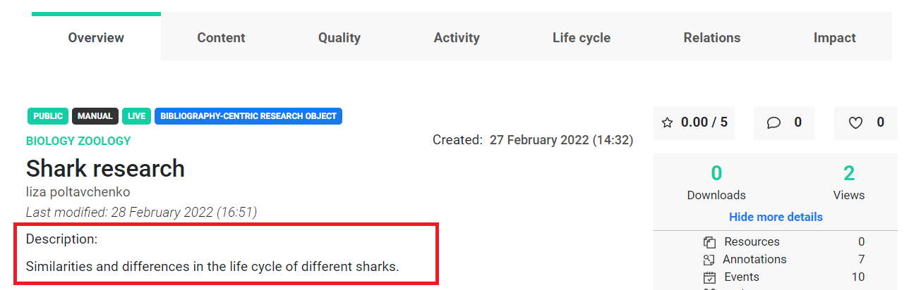
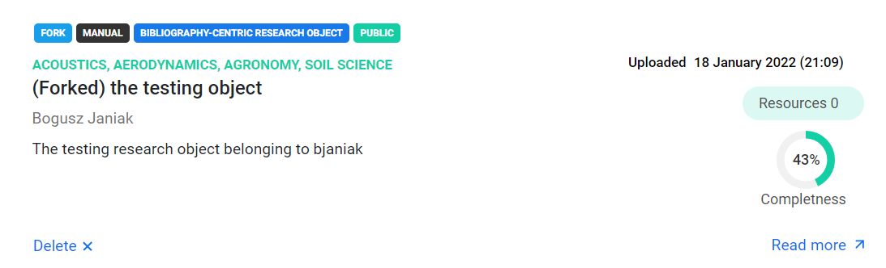
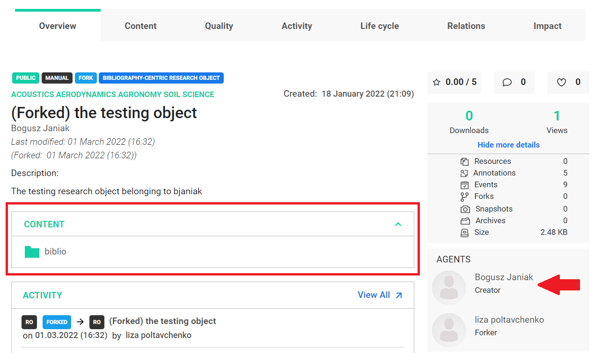
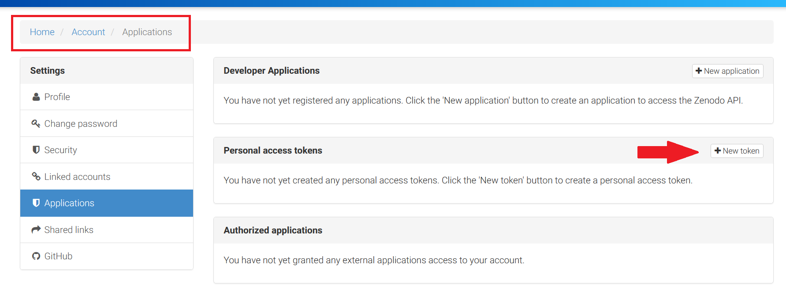
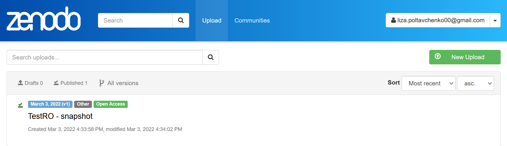
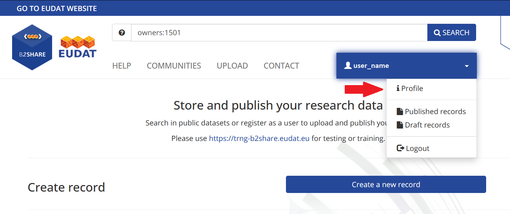
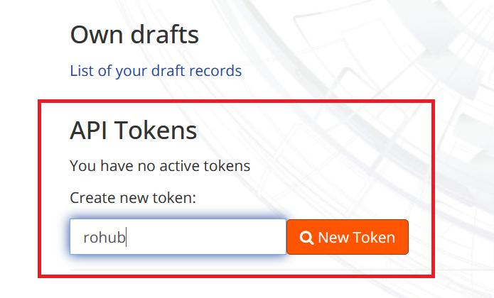
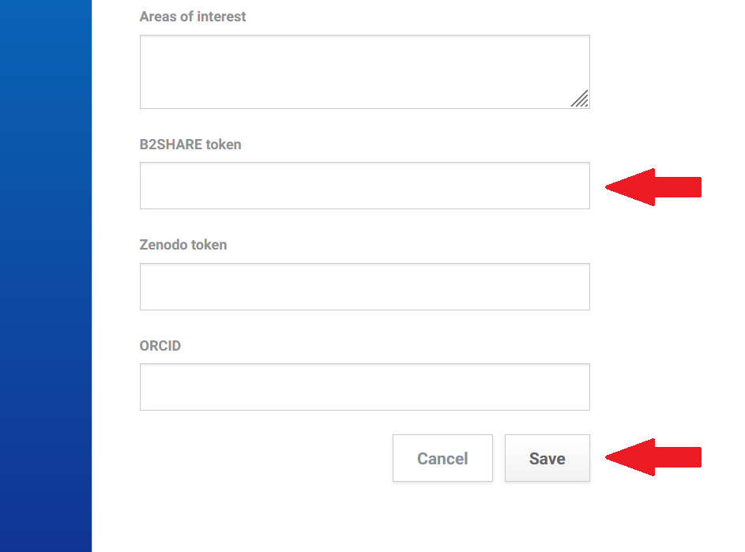
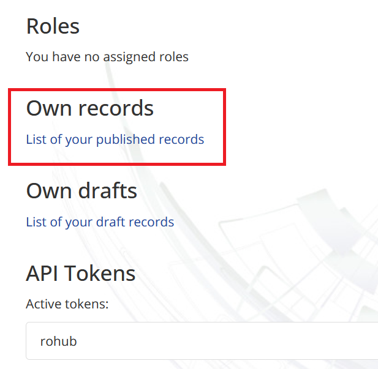
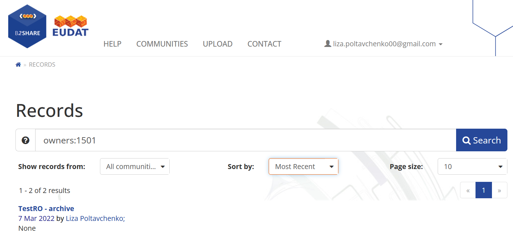

Modification of the Research Object
The creation of the research object was explained in the previous tutorial. In this section, we will focus on the research object modification.
Example 1
To load an existing research object into the local scope, we will need only one piece of information - the research object’s identifier.
First, we will use our research object as an example. We can use a built-in function to list all research objects that belong to us.
[2]:
my_ros = rohub.list_my_ros()
my_ros
[2]:
| identifier | title | description | type | research_areas | status | created_on | created_by | modified_on | access_mode | owner | creation_mode | shared_link | |
|---|---|---|---|---|---|---|---|---|---|---|---|---|---|
| 0 | 43833c23-2242-48ef-8f0a-d925c0e1d3e9 | Shark research | None | Bibliography-centric Research Object | [Biology, Zoology] | LIVE | 2022-02-27T13:32:54.305241+00:00 | liza.poltavchenko00@gmail.com | 2022-02-27T13:51:10.797175+00:00 | PUBLIC | liza.poltavchenko00@gmail.com | MANUAL | https://w3id.org/ro-id-dev/43833c23-2242-48ef-... |
| 1 | 94b3cb95-9434-4028-be78-c383e0a27a74 | Shark research | None | Process-centric Research Object | [Biology, Zoology] | LIVE | 2022-02-27T13:32:42.545444+00:00 | liza.poltavchenko00@gmail.com | 2022-02-27T13:47:43.767596+00:00 | PUBLIC | liza.poltavchenko00@gmail.com | MANUAL | https://w3id.org/ro-id-dev/94b3cb95-9434-4028-... |
| 2 | 33c5b983-c16d-41fa-b957-740cc84f0f1f | Shark research | None | Basic Research Object | [Biology, Zoology] | LIVE | 2022-02-27T13:32:29.198896+00:00 | liza.poltavchenko00@gmail.com | 2022-02-27T13:44:22.992581+00:00 | PUBLIC | liza.poltavchenko00@gmail.com | MANUAL | https://w3id.org/ro-id-dev/33c5b983-c16d-41fa-... |
| 3 | 183b2253-3c95-432a-9308-98348ebba2b7 | TestRO_2 | None | Basic Research Object | [Biology, Zoology] | LIVE | 2022-02-27T13:27:48.501184+00:00 | liza.poltavchenko00@gmail.com | 2022-02-27T13:27:48.765675+00:00 | PUBLIC | liza.poltavchenko00@gmail.com | MANUAL | https://w3id.org/ro-id-dev/183b2253-3c95-432a-... |
| 4 | 3f1d6ad7-8c16-4d7c-8aa4-060672957117 | TestRO | None | Basic Research Object | [Acoustics, Aerodynamics, Agronomy] | LIVE | 2022-02-27T13:22:23.670270+00:00 | liza.poltavchenko00@gmail.com | 2022-02-27T13:22:23.976822+00:00 | PUBLIC | liza.poltavchenko00@gmail.com | MANUAL | https://w3id.org/ro-id-dev/3f1d6ad7-8c16-4d7c-... |
| 5 | f11dbb43-278a-4332-876e-f454d9fe71d6 | The influence of eating habits on sleep | Description | Basic Research Object | [Medical science] | LIVE | 2022-02-27T13:16:00.158198+00:00 | liza.poltavchenko00@gmail.com | 2022-02-28T15:18:45.166213+00:00 | PUBLIC | liza.poltavchenko00@gmail.com | MANUAL | https://w3id.org/ro-id-dev/f11dbb43-278a-4332-... |
[3]:
# using Panda's syntax to pick a specific row, column.
ro_id = my_ros.loc[0, "identifier"]
ro = rohub.ros_load(identifier = ro_id)
Research Object was successfully loaded with id = 43833c23-2242-48ef-8f0a-d925c0e1d3e9
[4]:
ro.show_metadata()
[4]:
{'identifier': '43833c23-2242-48ef-8f0a-d925c0e1d3e9',
'shared_link': 'https://w3id.org/ro-id-dev/43833c23-2242-48ef-8f0a-d925c0e1d3e9',
'title': 'Shark research',
'description': None,
'status': 'LIVE',
'access_mode': 'PUBLIC',
'type': 'Bibliography-centric Research Object',
'template': 'Bibliography Centric Research Object folders structure',
'created': '2022-02-27T13:32:54.305241Z',
'creator': 'liza.poltavchenko00@gmail.com',
'modificator': 'service-account-enrichment',
'modified': '2022-02-27T13:51:10.971472Z',
'importer': None,
'research_areas': ['Biology', 'Zoology'],
'owner': 'liza.poltavchenko00@gmail.com',
'editors': [],
'readers': [],
'rating': '0.00',
'number_of_ratings': 0,
'number_of_likes': 0,
'number_of_dislikes': 0,
'quality': 0,
'size': 2882,
'creation_mode': 'MANUAL',
'doi': None,
'api_link': 'https://rohub2020-rohub.apps.paas-dev.psnc.pl/api/ros/43833c23-2242-48ef-8f0a-d925c0e1d3e9/'}
There is no description associated with this research object when displaying metadata. We can aim at adding one.
To confirm, we can access the description attribute directly.
[5]:
print(ro.description)
None
As expected, there is no description value.
Now let’s set a new value for the description.
[6]:
new_description = "Similarities and differences in the life cycle of different sharks."
ro.description = new_description
We have provided a new description for our ro object, however, if we take a look in the service, or through the API we can see that the changes we made locally didn’t appear there!
[7]:
ro.description
[7]:
'Similarities and differences in the life cycle of different sharks.'
By design, changes we make locally have to be explicitly updated to appear in the API/Portal. That way, the user can play with an object locally and apply multiple changes without consequences.
Updating your local object so that it becomes aligned with service data and visible in the API or Portal is simple with the update() function. It doesn’t require any additional parameters.
[8]:
ro.update()
[8]:
{'identifier': '43833c23-2242-48ef-8f0a-d925c0e1d3e9',
'shared_link': 'https://w3id.org/ro-id-dev/43833c23-2242-48ef-8f0a-d925c0e1d3e9',
'title': 'Shark research',
'description': 'Similarities and differences in the life cycle of different sharks.',
'status': 'LIVE',
'access_mode': 'PUBLIC',
'type': 'Bibliography-centric Research Object',
'template': 'Bibliography Centric Research Object folders structure',
'created': '2022-02-27T13:32:54.305241Z',
'creator': 'liza.poltavchenko00@gmail.com',
'modificator': 'liza.poltavchenko00@gmail.com',
'modified': '2022-02-28T15:51:41.472933Z',
'importer': None,
'research_areas': ['Biology', 'Zoology'],
'owner': 'liza.poltavchenko00@gmail.com',
'editors': [],
'readers': [],
'rating': '0.00',
'number_of_ratings': 0,
'number_of_likes': 0,
'number_of_dislikes': 0,
'quality': 0,
'size': 2882,
'creation_mode': 'MANUAL',
'doi': None,
'api_link': 'https://rohub2020-rohub.apps.paas-dev.psnc.pl/api/ros/43833c23-2242-48ef-8f0a-d925c0e1d3e9/'}
Now, we can see that changes are published in the portal. 
Example 2
In this example, we will find and load a research object that belongs to someone else. To do that we can use ros_find() method.
First, we need to load a research object from all PUBLIC research objects.
[6]:
all_ros = rohub.ros_find()
bjaniak_ros = all_ros[all_ros.owner == 'bjaniak@man.poznan.pl']
ro2_id = bjaniak_ros.loc[96, 'identifier']
ro2 = rohub.ros_load(identifier = ro2_id)
Research Object was successfully loaded with id = 222fa7a9-d2c4-45db-8191-ca724584c18d
[7]:
ro2.show_metadata()
[7]:
{'identifier': '222fa7a9-d2c4-45db-8191-ca724584c18d',
'shared_link': 'https://w3id.org/ro-id-dev/222fa7a9-d2c4-45db-8191-ca724584c18d',
'title': 'bogusz_testing',
'description': None,
'status': 'LIVE',
'access_mode': 'PUBLIC',
'type': 'Bibliography-centric Research Object',
'template': 'Bibliography Centric Research Object folders structure',
'created': '2022-01-18T20:09:17.323895Z',
'creator': 'bjaniak@man.poznan.pl',
'modificator': 'bjaniak@man.poznan.pl',
'modified': '2022-02-13T20:52:03.474568Z',
'importer': None,
'research_areas': ['Acoustics', 'Aerodynamics', 'Agronomy', 'Soil science'],
'owner': 'bjaniak@man.poznan.pl',
'editors': [],
'readers': [],
'rating': '0.00',
'number_of_ratings': 0,
'number_of_likes': 0,
'number_of_dislikes': 0,
'quality': 43,
'size': 2466,
'creation_mode': 'MANUAL',
'doi': None,
'api_link': 'https://rohub2020-rohub.apps.paas-dev.psnc.pl/api/ros/222fa7a9-d2c4-45db-8191-ca724584c18d/'}
We can see that the selected research object has no description.
[9]:
print(ro2.description)
None
Let’s try to set a new value for the description.
[11]:
ro2.description = 'A new description for the testing object.'
ro2.description
[11]:
'A new description for the testing object.'
As we learned through the first example, locally changing the object doesn’t mean that changes are posted in the service!
[12]:
all_ros2 = rohub.ros_find()
all_ros2[all_ros2.identifier == ro2.identifier]
[12]:
| identifier | title | description | type | research_areas | status | created_on | created_by | modified_on | access_mode | owner | creation_mode | shared_link | |
|---|---|---|---|---|---|---|---|---|---|---|---|---|---|
| 96 | 222fa7a9-d2c4-45db-8191-ca724584c18d | bogusz_testing | None | Bibliography-centric Research Object | [Acoustics, Aerodynamics, Agronomy, Soil science] | LIVE | 2022-01-18T20:09:17.323895+00:00 | bjaniak@man.poznan.pl | 2022-01-18T20:09:17.660487+00:00 | PUBLIC | bjaniak@man.poznan.pl | MANUAL | https://w3id.org/ro-id-dev/222fa7a9-d2c4-45db-... |
Now, let’s use the update method.
[ ]:
ro2.update()
An error has occurred: SystemExit: {"detail":"You do not have permission to perform this action."}.
The message is self-explanatory. We do not possess permission to modify this research object. Therefore we can play with it locally, but we can’t publish changes until permissions were granted.
We can check the editors attribute of research object in order to check which users have permission to modify this object.
[14]:
print(ro2.editors)
None
This research object has no users who can edit it.
Adding editors to the Research Object
Let’s try to use our research object that was assigned to the ro variable and add users who can edit it.
First, we can check who is the owner of our selected object and whether the research object has any editors.
[15]:
ro.owner
[15]:
'liza.poltavchenko00@gmail.com'
[9]:
print(ro.editors)
None
[10]:
ro.editors = ['bjaniak@man.poznan.pl']
Now we have to update our research object.
[11]:
ro.update()
[11]:
{'identifier': '43833c23-2242-48ef-8f0a-d925c0e1d3e9',
'shared_link': 'https://w3id.org/ro-id-dev/43833c23-2242-48ef-8f0a-d925c0e1d3e9',
'title': 'Shark research',
'description': 'Similarities and differences in the life cycle of different sharks.',
'status': 'LIVE',
'access_mode': 'PUBLIC',
'type': 'Bibliography-centric Research Object',
'template': 'Bibliography Centric Research Object folders structure',
'created': '2022-02-27T13:32:54.305241Z',
'creator': 'liza.poltavchenko00@gmail.com',
'modificator': 'liza.poltavchenko00@gmail.com',
'modified': '2022-02-28T15:54:05.072136Z',
'importer': None,
'research_areas': ['Biology', 'Zoology'],
'owner': 'liza.poltavchenko00@gmail.com',
'editors': ['bjaniak@man.poznan.pl'],
'readers': [],
'rating': '0.00',
'number_of_ratings': 0,
'number_of_likes': 0,
'number_of_dislikes': 0,
'quality': 0,
'size': 3204,
'creation_mode': 'MANUAL',
'doi': None,
'api_link': 'https://rohub2020-rohub.apps.paas-dev.psnc.pl/api/ros/43833c23-2242-48ef-8f0a-d925c0e1d3e9/'}
[24]:
ro.editors
[24]:
['bjaniak@man.poznan.pl']
Research Object Evolution
Fork
Imagine a situation where we would like to modify a research object, but we do not have appropriate permissions. Evolution methods are a great way to solve this issue. Let’s introduce them.
The fork() method is used to copy the object for modification and reusability purposes without affecting the original one. It is an analogous concept to the fork in git.
The fork method has two optional parameters: title and description.
[15]:
fork_title = "(Forked) the testing object"
fork_description = "The testing research object belonging to bjaniak"
[17]:
forked_ro_id = ro2.fork(title = fork_title, description = fork_description)
forked_ro_id
Trying to confirm status of the job. It can take a while...
[17]:
'2a1be483-00df-469e-b3c6-7cf13bfb3420'
Now we can check the list of our research objects and find our forked object. The status of it is FORK.
[31]:
my_ros = rohub.list_my_ros()
my_ros[my_ros.identifier == forked_ro_id]
[31]:
| identifier | title | description | type | research_areas | status | created_on | created_by | modified_on | access_mode | owner | creation_mode | shared_link | |
|---|---|---|---|---|---|---|---|---|---|---|---|---|---|
| 1 | 2a1be483-00df-469e-b3c6-7cf13bfb3420 | (Forked) the testing object | The testing research object belonging to bjaniak | Bibliography-centric Research Object | [Acoustics, Aerodynamics, Agronomy, Soil science] | FORK | 2022-03-01T15:32:48.998434+00:00 | bjaniak@man.poznan.pl | 2022-03-01T15:32:50.287109+00:00 | PUBLIC | liza.poltavchenko00@gmail.com | MANUAL | https://w3id.org/ro-id-dev/2a1be483-00df-469e-... |
By checking our forked object on the rohub portal, we can see the name of the creator of the original research object, and we also have access to all the resources associated with this object.  
Now, if we load this object, we can freely modify it.
Snapshot
After creation, the research object has the state LIVE. Snapshots are immutable and reflect the state of the research object at a certain time. It can be handy if one would like to record past activity or do versioning.
To create a simple snapshot, use the .snapshot method which creates a copy of the research object and returns the id of it.
First, let’s load an object from our list.
[28]:
my_ros = rohub.list_my_ros()
ro_id = my_ros.loc[6, 'identifier']
ro = rohub.ros_load(identifier = ro_id)
ro.show_metadata()
Research Object was successfully loaded with id = 3f1d6ad7-8c16-4d7c-8aa4-060672957117
[28]:
{'identifier': '3f1d6ad7-8c16-4d7c-8aa4-060672957117',
'shared_link': 'https://w3id.org/ro-id-dev/3f1d6ad7-8c16-4d7c-8aa4-060672957117',
'title': 'TestRO',
'description': None,
'status': 'LIVE',
'access_mode': 'PUBLIC',
'type': 'Basic Research Object',
'template': None,
'created': '2022-02-27T13:22:23.670270Z',
'creator': 'liza.poltavchenko00@gmail.com',
'modificator': 'liza.poltavchenko00@gmail.com',
'modified': '2022-02-27T13:22:23.767744Z',
'importer': None,
'research_areas': ['Acoustics', 'Aerodynamics', 'Agronomy'],
'owner': 'liza.poltavchenko00@gmail.com',
'editors': [],
'readers': [],
'rating': '0.00',
'number_of_ratings': 0,
'number_of_likes': 0,
'number_of_dislikes': 0,
'quality': 0,
'size': 1752,
'creation_mode': 'MANUAL',
'doi': None,
'api_link': 'https://rohub2020-rohub.apps.paas-dev.psnc.pl/api/ros/3f1d6ad7-8c16-4d7c-8aa4-060672957117/'}
Now, we can create a simple snapshot.
[29]:
snapshot_id = ro.snapshot()
snapshot_id
Trying to confirm status of the job. It can take a while...
[29]:
'afecac37-bf87-48f8-955e-4cf465e4ded3'
We can check the new copy (shapshot) that we have created in the list of our research objects. The object has status SNAPSHOT.
[30]:
my_ros = rohub.list_my_ros()
my_ros[my_ros.identifier == snapshot_id]
[30]:
| identifier | title | description | type | research_areas | status | created_on | created_by | modified_on | access_mode | owner | creation_mode | shared_link | |
|---|---|---|---|---|---|---|---|---|---|---|---|---|---|
| 0 | afecac37-bf87-48f8-955e-4cf465e4ded3 | TestRO - snapshot | None | Basic Research Object | [Acoustics, Aerodynamics, Agronomy] | SNAPSHOT | 2022-03-01T15:51:49.493676+00:00 | liza.poltavchenko00@gmail.com | 2022-03-01T15:51:50.493731+00:00 | PUBLIC | liza.poltavchenko00@gmail.com | MANUAL | https://w3id.org/ro-id-dev/afecac37-bf87-48f8-... |
Publication
The method .snapshot allows publishing a snapshot on the Zenodo and B2Share portals. To do so, one should make use of optional parameters that are available through the snapshot method: create_doi, external_doi, publiction_services.
If we have an existing doi that we would like to use, we could pass its value through the external_doi parameter.
In case we don’t, we can set the create_doi flag to
Trueto ask the service to generate a new one for us.
create_doi and external_doi are mutually exclusive!
Let’s try to create a new snapshot that will be published on the Zenodo portal using the loaded research object ro.
[ ]:
snapshot_id_pub = ro.snapshot(create_doi = True, publication_services = ['zenodo'])
An error has occurred: SystemExit: {"Error":"Zenodo credentials are missing."}. The new snapshot was created. We can see it in the list of our research objects, but the publication failed.
The reason for that being our rohub account is not connected to the target publication service. We can solve it by generating an appropriate token and updating our rohub profile.
How to generate and use a token from Zenodo? 1. After logging into the Zenodo portal, select the “Application” section in the settings list. 2. Create a personal access token by clicking the “New Token” button.
 Do not forget to select scopes: actions nad write
We can use the show_my_user_profile_details() function to check if we have a token. The value of the zenodo_token key is True if we set the token and False if we don’t have the token.
[58]:
rohub.show_my_user_profile_details()
[58]:
{'identifier': '98256346-9574-425f-9c19-4cf5e0e3b252',
'username': 'liza.poltavchenko00@gmail.com',
'first_name': 'Liza',
'last_name': 'Poltavchenko',
'email': 'liza.poltavchenko00@gmail.com',
'salutation': None,
'affiliation': None,
'description': None,
'areas_of_interest': None,
'photo_url': None,
'facebook_profile': None,
'google_profile': None,
'linkedin_profile': None,
'b2share_token': False,
'zenodo_token': False,
'orcid_identifier': None,
'is_service': False,
'is_staff': False,
'is_active': True,
'roles': ['access'],
'resource_storage': 'DEFAULT',
'b2drop_username': False,
'b2drop_password': False,
'api_link': 'https://rohub2020-rohub.apps.paas-dev.psnc.pl/api/users/98256346-9574-425f-9c19-4cf5e0e3b252/'}
We have added the Zenodo token to our profile, but the zenodo_token key is set to False in the function’s output. This is because our profile metadata has not been updated. We must log in to your profile again using the rohub.login() function to update profile metadata.
[61]:
login = open("user_email.txt").read()
pwd = open("user_pwd.txt").read()
rohub.login(username = login, password = pwd)
rohub.show_my_user_profile_details()
Logged successfully as liza.poltavchenko00@gmail.com.
[61]:
{'identifier': '98256346-9574-425f-9c19-4cf5e0e3b252',
'username': 'liza.poltavchenko00@gmail.com',
'first_name': 'Liza',
'last_name': 'Poltavchenko',
'email': 'liza.poltavchenko00@gmail.com',
'salutation': None,
'affiliation': None,
'description': None,
'areas_of_interest': None,
'photo_url': None,
'facebook_profile': None,
'google_profile': None,
'linkedin_profile': None,
'b2share_token': False,
'zenodo_token': True,
'orcid_identifier': None,
'is_service': False,
'is_staff': False,
'is_active': True,
'roles': ['access'],
'resource_storage': 'DEFAULT',
'b2drop_username': False,
'b2drop_password': False,
'api_link': 'https://rohub2020-rohub.apps.paas-dev.psnc.pl/api/users/98256346-9574-425f-9c19-4cf5e0e3b252/'}
Now we can try to create and publish a snapshot again.
[64]:
snapshot_id_pub = ro.snapshot(create_doi = True, publication_services = ['zenodo'])
snapshot_id_pub
Trying to confirm status of the job. It can take a while...
[64]:
'9aaeb35c-1e86-4b0e-8deb-6dbc466221f3'
We can see now that snapshotted research object appears in our list.
[68]:
rohub.list_my_ros()[:3]
[68]:
| identifier | title | description | type | research_areas | status | created_on | created_by | modified_on | access_mode | owner | creation_mode | shared_link | |
|---|---|---|---|---|---|---|---|---|---|---|---|---|---|
| 0 | 9aaeb35c-1e86-4b0e-8deb-6dbc466221f3 | TestRO - snapshot | None | Basic Research Object | [Acoustics, Aerodynamics, Agronomy] | SNAPSHOT | 2022-03-03T16:04:00.925793+00:00 | liza.poltavchenko00@gmail.com | 2022-03-03T16:04:11.040767+00:00 | PUBLIC | liza.poltavchenko00@gmail.com | MANUAL | https://w3id.org/ro-id-dev/9aaeb35c-1e86-4b0e-... |
| 1 | afecac37-bf87-48f8-955e-4cf465e4ded3 | TestRO - snapshot | None | Basic Research Object | [Acoustics, Aerodynamics, Agronomy] | SNAPSHOT | 2022-03-01T15:51:49.493676+00:00 | liza.poltavchenko00@gmail.com | 2022-03-01T16:08:04.632272+00:00 | PUBLIC | liza.poltavchenko00@gmail.com | MANUAL | https://w3id.org/ro-id-dev/afecac37-bf87-48f8-... |
| 2 | 2a1be483-00df-469e-b3c6-7cf13bfb3420 | (Forked) the testing object | The testing research object belonging to bjaniak | Bibliography-centric Research Object | [Acoustics, Aerodynamics, Agronomy, Soil science] | FORK | 2022-03-01T15:32:48.998434+00:00 | bjaniak@man.poznan.pl | 2022-03-01T16:01:16.620589+00:00 | PUBLIC | liza.poltavchenko00@gmail.com | MANUAL | https://w3id.org/ro-id-dev/2a1be483-00df-469e-... |
We also can use the ros_list_publications() function to list publication details related to specific research object. The function has one argument - the identifier of the research object.
[67]:
rohub.ros_list_publications(identifier = snapshot_id_pub)
[67]:
[{'doi': 'https://doi.org/10.4124/ma97-0e27',
'storage': 'Zenodo',
'storage_record_id': '6325871'}]
We can see that our snapshot appeared in the upload section of the Zenodo service.
Archive
The last evolution method that can be applied to the research object is an archive.
The archive represents the final stage of the research object where it has either reached a version that the author prescribes to be stable and meaningful or has been deprecated. They are therefore immutable, with no further changes or versions allowed.
In terms of usage archive method works very similar to the snapshot method.
Let’s create a simple archive using the research object that we used to test the .snapshot method.
[4]:
archive_id = ro.archive()
archive_id
Trying to confirm status of the job. It can take a while...
[4]:
'0f523dd8-851e-4446-8c6d-acaff2c1a6ad'
We can check the new archive in the list of our research objects. The object has status ARCHIVE.
[5]:
my_ros = rohub.list_my_ros()
my_ros[my_ros.identifier == archive_id]
[5]:
| identifier | title | description | type | research_areas | status | created_on | created_by | modified_on | access_mode | owner | creation_mode | shared_link | |
|---|---|---|---|---|---|---|---|---|---|---|---|---|---|
| 0 | 0f523dd8-851e-4446-8c6d-acaff2c1a6ad | TestRO - archive | None | Basic Research Object | [Acoustics, Aerodynamics, Agronomy] | ARCHIVE | 2022-03-07T21:12:14.190827+00:00 | liza.poltavchenko00@gmail.com | 2022-03-07T21:12:17.323104+00:00 | PUBLIC | liza.poltavchenko00@gmail.com | MANUAL | https://w3id.org/ro-id-dev/0f523dd8-851e-4446-... |
The method .archive also allows publishing an archive on the Zenodo and B2Share portals. It works analogously to the snapshot method.
The procedure for creating and setting a token for the B2Share portal looks similar to the procedure for the Zenodo portal.
Logging into the B2Share portal, select the “Profile” section in the profile list. 
Enter the token number and click the “New Token” button at the bottom of the page to create a personal access token. 
Copy the token.
After logging in to your account on the rohub portal find a “B2Share token” field at the bottom of the “Account” settings section.
Paste the copied token and click the “Save” button. 
Let’s check if we now also have a B2Share token.
[13]:
login = open("user_email.txt").read()
pwd = open("user_pwd.txt").read()
rohub.login(username = login, password = pwd)
rohub.show_my_user_profile_details()
Logged successfully as liza.poltavchenko00@gmail.com.
[13]:
{'identifier': '98256346-9574-425f-9c19-4cf5e0e3b252',
'username': 'liza.poltavchenko00@gmail.com',
'first_name': 'Liza',
'last_name': 'Poltavchenko',
'email': 'liza.poltavchenko00@gmail.com',
'salutation': None,
'affiliation': None,
'description': None,
'areas_of_interest': None,
'photo_url': None,
'facebook_profile': None,
'google_profile': None,
'linkedin_profile': None,
'b2share_token': True,
'zenodo_token': True,
'orcid_identifier': None,
'is_service': False,
'is_staff': False,
'is_active': True,
'roles': ['access'],
'resource_storage': 'DEFAULT',
'b2drop_username': False,
'b2drop_password': False,
'api_link': 'https://rohub2020-rohub.apps.paas-dev.psnc.pl/api/users/98256346-9574-425f-9c19-4cf5e0e3b252/'}
Now we can try to create a new archive which will be published on the B2Share portal.
[14]:
archive_id_pub = ro.archive(create_doi = True, publication_services = ['B2Share'])
archive_id_pub
Trying to confirm status of the job. It can take a while...
[14]:
'241c94b0-4df9-4e61-b345-eb4455d04031'
[15]:
rohub.ros_list_publications(identifier = archive_id_pub)
[15]:
[{'doi': 'http://doi.org/XXXX/b2share.ea008002923744b3ac51896e65967bc9',
'storage': 'B2SHARE',
'storage_record_id': 'ea008002923744b3ac51896e65967bc9'}]
We can check the new archive in the “Own Records” section of the B2Share portal. For that purpose, open the “Profile” section and find the link in the “Own records” section.  Here we can see the list of our published records. 
Deleting Research Object
The rohub.ros_delete() function deletes the selected research object. This function has one parameter: the id of the specific research object.
Example 1
Let’s try to remove the first research object from the list of objects that belongs to us.
[26]:
my_ros = rohub.list_my_ros()
my_ros[:2]
[26]:
| identifier | title | description | type | research_areas | status | created_on | created_by | modified_on | access_mode | owner | creation_mode | shared_link | |
|---|---|---|---|---|---|---|---|---|---|---|---|---|---|
| 0 | 241c94b0-4df9-4e61-b345-eb4455d04031 | TestRO - archive | None | Basic Research Object | [Acoustics, Aerodynamics, Agronomy] | ARCHIVE | 2022-03-07T21:24:49.954450+00:00 | liza.poltavchenko00@gmail.com | 2022-03-07T21:25:02.618568+00:00 | PUBLIC | liza.poltavchenko00@gmail.com | MANUAL | https://w3id.org/ro-id-dev/241c94b0-4df9-4e61-... |
| 1 | cc32c80e-bbca-46a6-bb98-1614362267b4 | TestRO - snapshot | None | Basic Research Object | [Acoustics, Aerodynamics, Agronomy] | SNAPSHOT | 2022-03-03T16:14:03.641971+00:00 | liza.poltavchenko00@gmail.com | 2022-03-03T16:14:06.008378+00:00 | PUBLIC | liza.poltavchenko00@gmail.com | MANUAL | https://w3id.org/ro-id-dev/cc32c80e-bbca-46a6-... |
[17]:
deleted_ro_id = my_ros.loc[0, 'identifier']
deleted_ro_id
[17]:
'241c94b0-4df9-4e61-b345-eb4455d04031'
[ ]:
rohub.ros_delete(identifier = deleted_ro_id)
An error has occurred: SystemExit: {"detail":"You do not have permission to perform this action."}. That’s because this object was published, and it is forbidden to delete a previously published research object.
[24]:
rohub.ros_list_publications(identifier = deleted_ro_id)
[24]:
[{'doi': 'http://doi.org/XXXX/b2share.ea008002923744b3ac51896e65967bc9',
'storage': 'B2SHARE',
'storage_record_id': 'ea008002923744b3ac51896e65967bc9'}]
Let’s try to delete an object that has not been previously published.
[27]:
deleted_ro_id = my_ros.loc[1, 'identifier']
deleted_ro_id
[27]:
'cc32c80e-bbca-46a6-bb98-1614362267b4'
[28]:
rohub.ros_list_publications(identifier = deleted_ro_id)
[28]:
[]
[29]:
rohub.ros_delete(identifier = deleted_ro_id)
Trying to confirm status of the job. It can take a while...
[29]:
{'identifier': '3ed7d363-97b5-4fad-b803-9cfac001c149',
'created_by': 'liza.poltavchenko00@gmail.com',
'created_on': '2022-03-09T16:36:41.521516+0000',
'started_on': '2022-03-09T16:36:41.681562+0000',
'finished_on': '2022-03-09T16:36:42.715226+0000',
'operation': 'RO_DELETE',
'status': 'SUCCESS',
'input': 'RO identifier for remove: cc32c80e-bbca-46a6-bb98-1614362267b4',
'output': 'Task done successfully',
'results': 'cc32c80e-bbca-46a6-bb98-1614362267b4',
'warnings': None,
'execution': '1.033664',
'api_link': 'https://rohub2020-rohub.apps.paas-dev.psnc.pl/api/jobs/3ed7d363-97b5-4fad-b803-9cfac001c149/'}
Now, we can confirm that the object is no longer present in the service and API.
[30]:
my_ros = rohub.list_my_ros()
my_ros[my_ros.identifier == deleted_ro_id]
[30]:
| identifier | title | description | type | research_areas | status | created_on | created_by | modified_on | access_mode | owner | creation_mode | shared_link |
|---|
Example 2
Let’s try to delete a research object that belongs to another user. We can choose some random one, for example, one with id = 12.
[20]:
all_ros = rohub.ros_find()
deleted_ro_id = all_ros.loc[12, 'identifier']
Before deleting, let’s check who is the owner of the selected research object.
[21]:
deleted_ro = rohub.ros_load(identifier = deleted_ro_id)
deleted_ro.owner
Research Object was successfully loaded with id = b8cba10f-67e4-46f2-b164-78159ea9350c
[21]:
'service-account-migration-service'
Now we can try to delete the object.
[ ]:
rohub.ros_delete(identifier = deleted_ro_id)
An error has occurred: SystemExit: {"detail":"You do not have permission to perform this action."}. A similar case, to the one where we were trying to modify an object that belongs to someone else. We need special permission to delete another user’s object.